Electronic press kit, updated October 2026
Everything a promoter, agent, label or journalist needs on one page: bios, photography, music, history and contact.
The ZIP holds photos in web and social sizes, the logo set and copy-ready bios. Performance video in the media library.
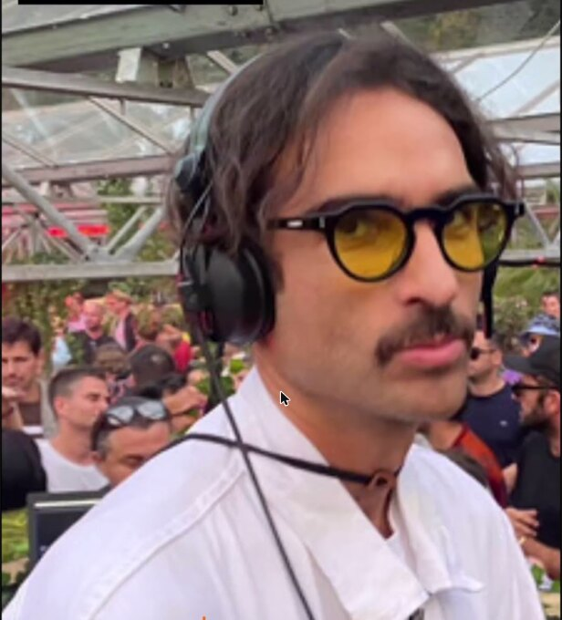
Copy-ready, in two lengths and two languages
M.O.S is the alias of Michael Oulbaz Suarez, a DJ and producer based in Brussels. Born of African roots, he folds R&B warmth and Eastern lines into eclectic, bass-forward house, mixing vinyl, hardware and CDJs in the same channel. His remix of Attari's "Gemmayzeh" (with Lui) appeared on Monkey Parade Records; his sets run from Brussels club rooms, Kiosk Radio and Jam Radio to forest stages and beach floors.
M.O.S, alias de Michael Oulbaz Suarez, est DJ et producteur basé à Bruxelles. De racines africaines, il glisse la chaleur du R&B et des lignes orientales dans une house éclectique et physique, mêlant vinyles, machines et CDJs dans le même canal. Son remix de « Gemmayzeh » d'Attari (avec Lui) est sorti sur Monkey Parade Records ; ses sets vont des clubs bruxellois, de Kiosk Radio et de Jam Radio aux scènes en forêt et aux plages.
M.O.S is the project of Michael Oulbaz Suarez, a selector who came to production through years of listening: analog records, East African and Eastern tonalities, the R&B he grew up on, and the deep end of house music. That blend gives his sets their signature, seductive rhythms under hypnotic patience, groove placed before spectacle.
Based in Brussels, he moves between vinyl, hardware and CDJs, treating tradition and technology as parts of one instrument. On record, his remix of Attari's "Gemmayzeh", made with Lui, was released on Monkey Parade Records, and 2026 brought a run of self-released tracks: Amour Seum, Cataclysme 2.0 and Automatic Sex. He has broadcast repeatedly from the Kiosk Radio booth in Brussels park and played a liveset for Jam Radio.
On stage, the range is the point. M.O.S has played red-lit festival floors, packed club rooms, beach bars under the palms, private parties and the open desert, reading each floor rather than fighting it, and adjusting the bag accordingly.
Three new productions are currently in the works, sample-driven and machine-built. Behind them sits a longer plan: a label and a party series of his own, assembled the way he builds a set, piece by piece, keeping only what earns its place. For bookings and press, management responds within 48 hours.
Hear him before you write or book
| Release | Role | Label / year | Link |
|---|---|---|---|
| Amour Seum | Original | Self-released, 2026 | SoundCloud |
| Gemmayzeh (Lui & M.O.S remix) | Remix of Attari | Monkey Parade Records | SoundCloud |
| Cataclysme 2.0 | Original | Self-released, 2026 | SoundCloud |
| Automatic Sex | Original | Self-released, 2026 | SoundCloud |
| Three new productions | Originals | Due 2026 | — |
Click any photo to download; full-resolution video in the media pack
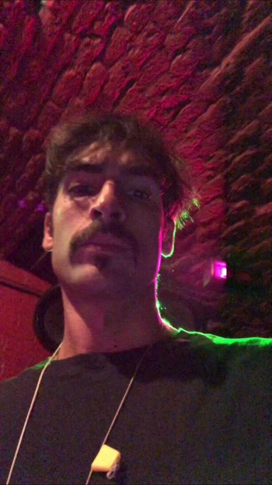
Download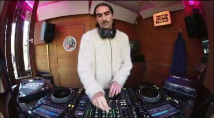
Download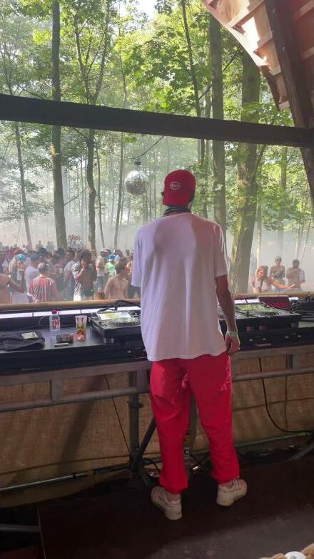
Download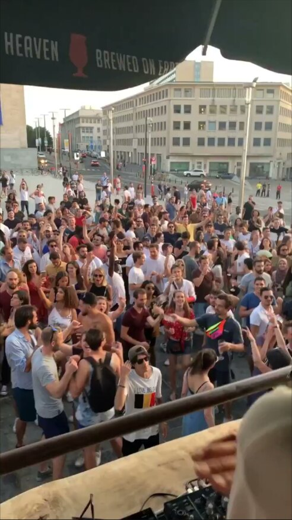
Download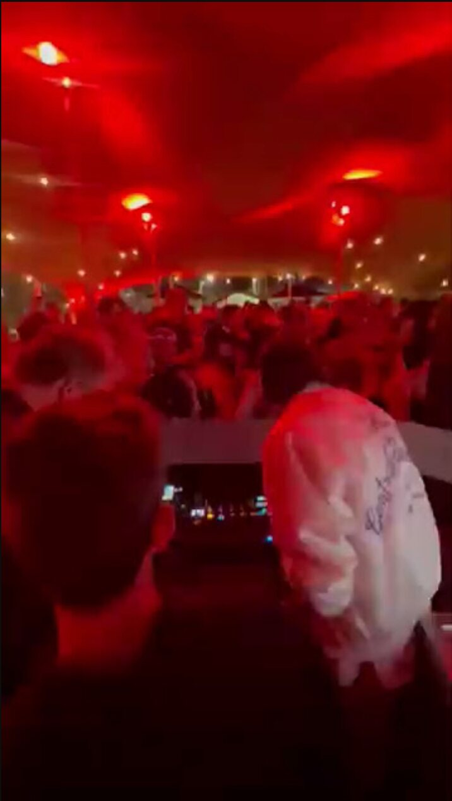
Download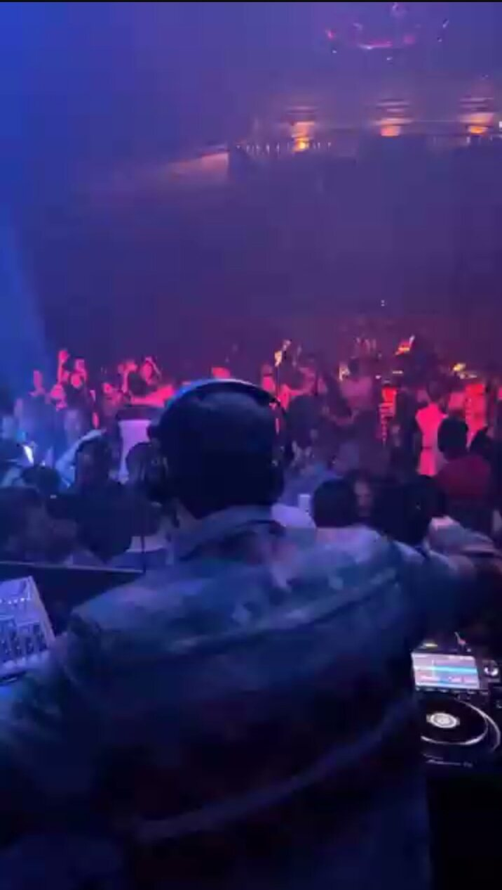
Download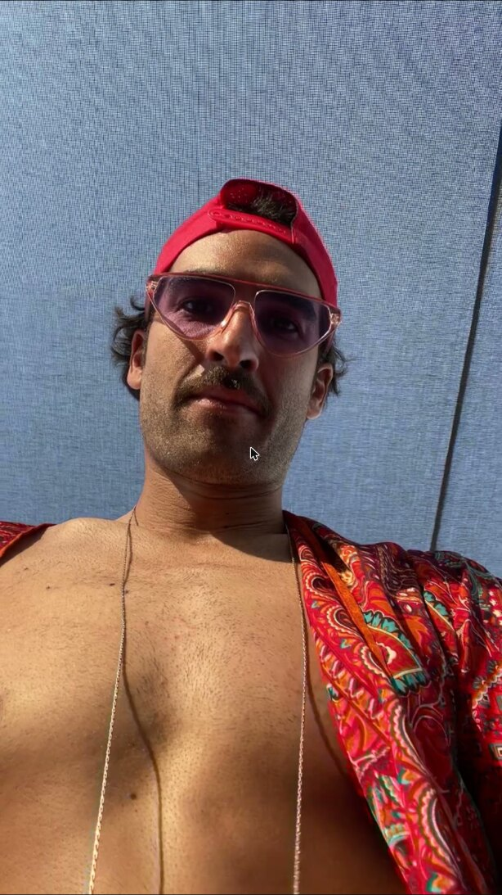
Download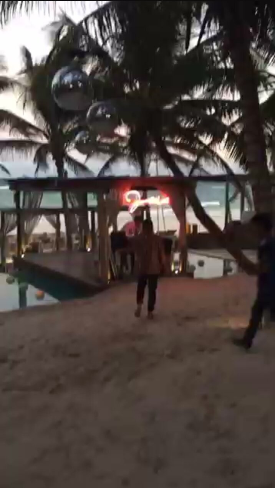
Download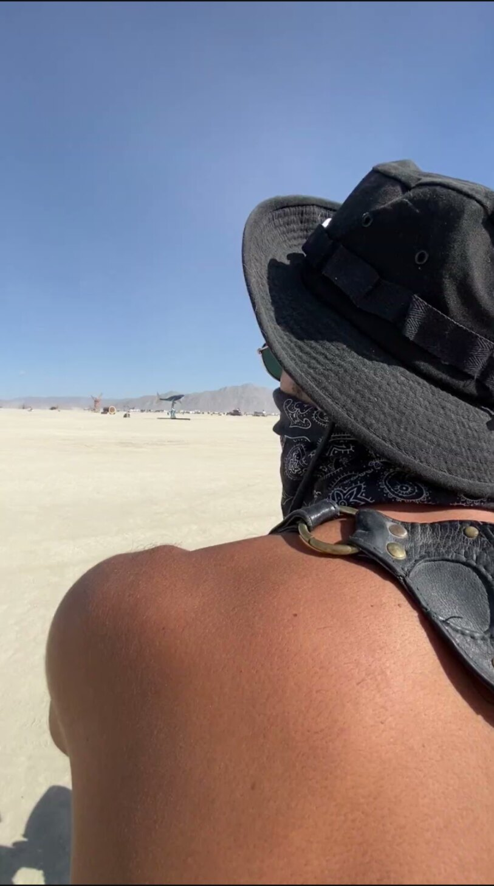
Download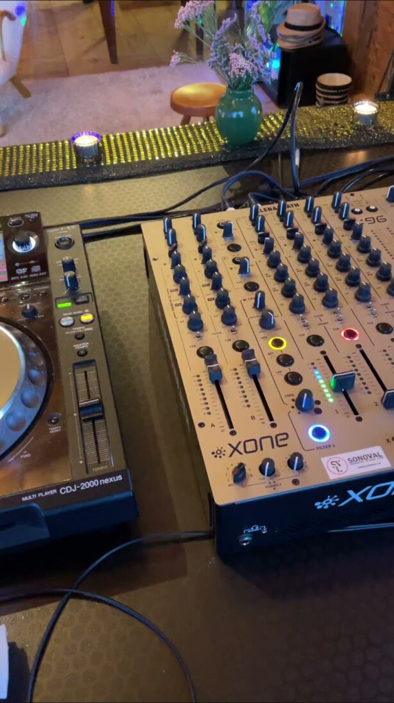
DownloadCredit: courtesy of the artist. The pack carries each photo at web size (~1600px) and social size (1080px).
Use the marks as provided; don't recolour or distort
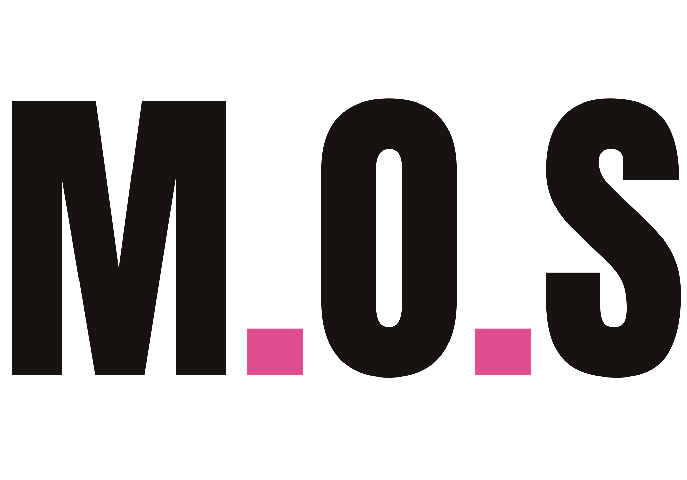
Verified, no padding
Full date list with venues available from management on request.
Where to find him
Management replies within 48 hours
M.O.S is developed with FLAVLAB SIGNAL. This page prints cleanly: use "Save as PDF" to generate the document version of this kit.